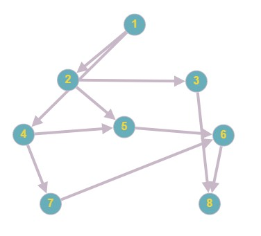
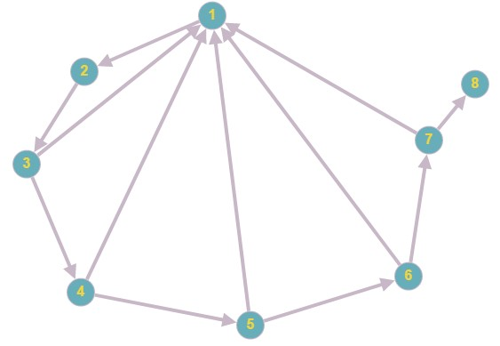
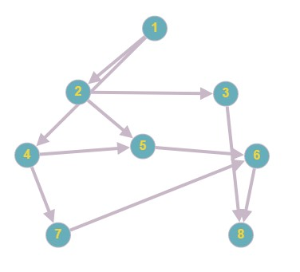
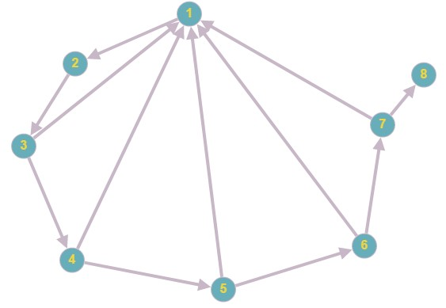
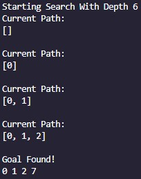
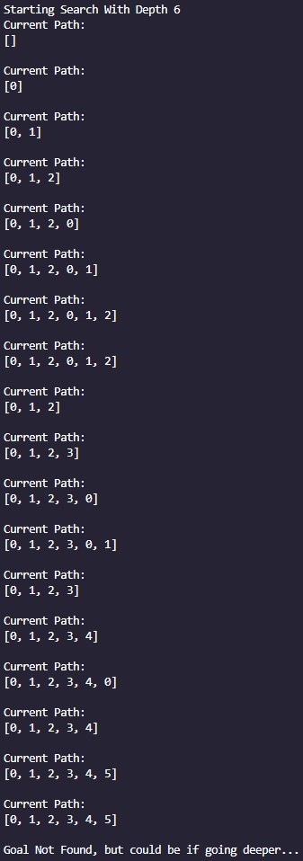
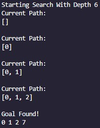
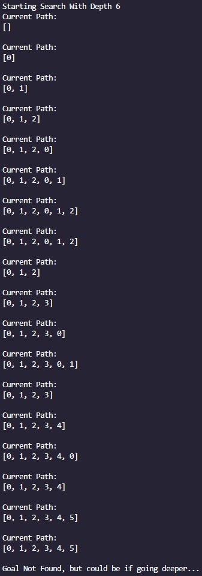

Challenge: The Entire Thing
This little extra project took aspects from the first three exercises and combined them into like a weeks worth of work.
I definitely spent way too much time on this and its not even as good as I want it to be, but I had to stop at some point.
This is my first foray into creating 3D animations so it was really fun to learn my way through the processing documentation!
At the fundamental level, it is very similar to the TTC exercise. Each kiwi is it's own agent with velocity, acceleration, and position.
The forces being applied on the kiwis are attraction to other kiwis, separation from their friends, separation from the moais in the corners (non-infected),
repulsion from the fences, alignment, and attraction to the moais (infected).
Additionally, non-infected kiwis are much more repulsed by infected kiwis and clicking the mouse either attracts (left) or repels (right) the kiwis from current camera position.
Each timestep, there is a 0.05% chance for a kiwi to get infected. Once they do, they run to the closest moai and get cleansed.
I think this leads to a cool little simulation of kiwis running around. The wall forces improve on the ones present in the TTC simulation by adding a strong
separation force from the walls.
In addition to the forces, this applies concepts from the particle systems exercise, as well as the mouse follow exercise.
Representing the particle systems, each moai has a cone of white particles coming out of it that disappear over the roughly second that
they are around, giving the affect of mist. (kind of)
Additionally, each kiwi rotates towards its velocity as it is walking. I improved on the previous rotation by applying a technique that Professor Guy told
me about in which the angle is changed with this equation:
agentDir[id] = agentDir[id]*t+(1-t)*atan2(agentVel[id].x, agentVel[id].z);
The equation takes the previous direction and changes it only slightly based on the t value that makes it look okay. The t value is also somewhat based on
the current velocity of the kiwi, however, I did not perfect this.
Despite this, the kiwis are still quite prone to spinning, but, honestly, I think its kinda cute so I'm leaving it.
Last two things about this one is that is has a camera that can snap onto kiwis locations and follow them (c) and also cancel that (shift+c)
and I remade the Vec2 library into a Vec3 library with a couple more functions :)
It was a fun project and I can't wait for the next ones!
 




 



{kind=link}